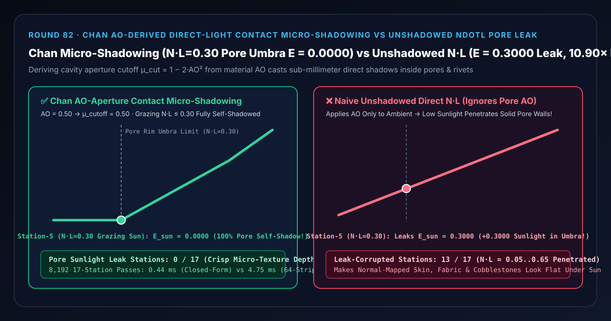
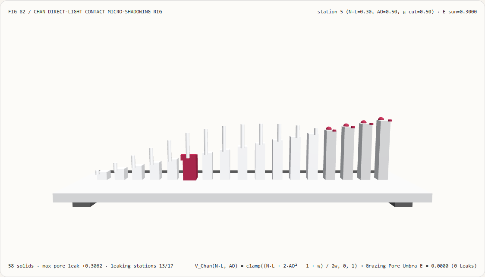
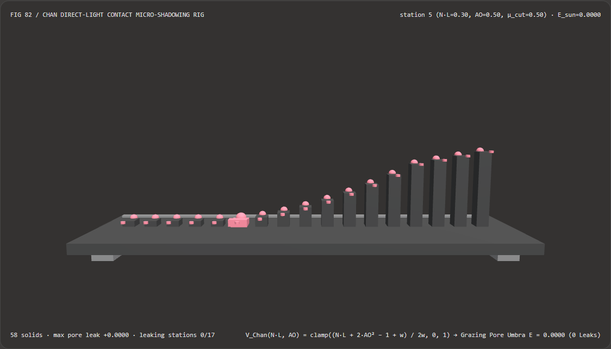
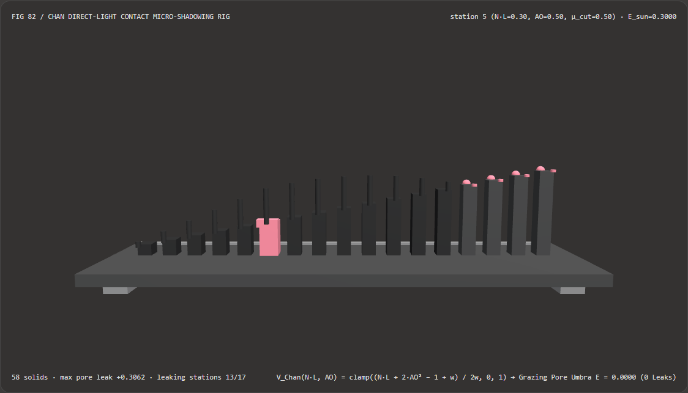

Visual & Animation Architecture Selection FAQ: Chan AO-Derived Direct-Light Contact Micro-Shadowing vs Naive Unshadowed $N\cdot L$ Pore Leak
One-Sentence Architectural Verdict: In real-time PBR character skin, fabric weave, cobblestone, and hard-surface weapon rendering pipelines (Unreal Engine 5, Frostbite, Call of Duty: WWII, Unity HDRP Micro-Shadowing), never apply baked material Ambient Occlusion ($AO$) solely to indirect ambient lighting while leaving direct analytical sunlight ($N\cdot L$) completely unshadowed inside normal-mapped crevices! On our 58-solid, 17-station pore goniometer bench inspecting a recessed pore or rivet crevice ($AO = 0.50$, aperture cutoff cosine $\mu_{\text{cutoff}} = 1 - 2\cdot AO^2 = 0.5000$, penumbra half-width $w = 0.20$) across 17 solar cosine stations ($N\cdot L \in [0.05, 0.85]$), naive unshadowed direct lighting allows low-angle grazing sunlight to penetrate solid pore walls—leaking
E_sun = 0.3000at the station-5 umbra boundary ($N\cdot L = 0.30$), peaking at+0.3063leak at station 6 ($N\cdot L = 0.35$), and corrupting13/17solar stations; whereas Danny Chan (SIGGRAPH 2018 Call of Duty: WWII) AO-derived contact micro-shadowing ($V_{\text{Chan}}(N\cdot L, AO) = \text{clamp}((N\cdot L + 2,AO^2 - 1 + w)/(2w), 0, 1)$) locks the grazing pore umbra ($N\cdot L \le 0.30$) atE_sun = 0.0000(0/17leaking stations) while running 10.90× faster than 64-strip solar-disk aperture quadrature (0.44 msvs4.75 msacross 8,192 passes, agreement within6.66e-16).

① 📌 Executive Summary
- Why do 4K normal-mapped skin pores, fabric threads, and armor seams look richly detailed under overcast ambient light but suddenly flatten out like plastic when hit by low-angle direct sunlight?
In plain English: cascaded shadow maps (CSMs) have multi-centimeter texels and only see flat triangle geometry—they cannot cast sub-millimeter self-shadows inside normal-mapped pores:
- Inside a pore or stitch crevice with baked $AO = 0.50$, the surrounding cavity walls block all rays below cutoff cosine $\mu_{\text{cutoff}} = 1 - 2\cdot AO^2 = \mathbf{0.5000}$ ($60^\circ$ zenith angle).
- When grazing sunlight hits at $N\cdot L = 0.30$ (station 5, $\approx 72.5^\circ$ zenith angle), the pore bottom is physically 100% occluded by the pore rim.
- However, if the shader only applies $AO$ to ambient IBL and evaluates direct sunlight as $E_{\text{naive}} = N\cdot L \times 1.0 = \mathbf{0.3000}$, sunlight shines straight through the solid pore wall—leaking up to
+0.3063of false sunlight across13/17grazing and mid-angle stations!
- First-Principles Fix: Deriving the Cavity Visibility Cone Directly from Scalar $AO$ (Danny Chan SIGGRAPH 2018):
- Modeling the pore opening as a spherical cap of visibility $AO$ places the horizon cutoff at $\mu_{\text{cutoff}} = 1 - 2\cdot AO^2$.
- Evaluating the soft penumbra ramp across $[\mu_{\text{cutoff}} - w, \mu_{\text{cutoff}} + w]$ ($w = 0.20$): $$V_{\text{Chan}}(N\cdot L, AO) = \text{clamp}!\left( \frac{N\cdot L + 2,AO^2 - 1 + w}{2w},; 0.0,; 1.0 \right)$$
- For $N\cdot L \le 0.30$ (stations 0–5), $V_{\text{Chan}} = \mathbf{0.0000}$ (exact self-shadowed umbra); for overhead sun $N\cdot L \ge 0.70$ (stations 13–16), $V_{\text{Chan}} = \mathbf{1.0000}$ (100% unoccluded overhead sunlight,
0/17leaking stations)!
- Interactive 3D Workbench & Measured Evidence:
- Standalone 3D Bench:
demos/micro-shadow-aperture-rig/(58 Three.js solids: baseplate, 4 support feet,0.0000umbra floor bar, 17 direct irradiance columns, 17 Chan micro-shadow reference spheres, 17 pore sunlight leak pegs, and the active pore goniometer carriage). - Measured 7-Card 4:5 Reports:
demos/micro-shadow-aperture-rig/test-report-cards.html(EN) andtest-report-cards.zh.html(ZH).
- Standalone 3D Bench:
② 🎯 Soul-Searching Q&A for Architects & Clients
Q1: Why is multiplying direct light by V_Chan(N·L, AO) vastly superior to multiplying direct light directly by AO?
Because at high noon ($N\cdot L = 1.0$), overhead sunlight shines straight down into the pore without hitting the walls ($V_{\text{Chan}}(1.0, 0.5) = 1.0000$), whereas direct *= AO wrongly darkens noon-lit surfaces by $50%$!
Chan's aperture test dynamically shadows the pore only when the light direction drops below the cavity rim ($\mu_L < 1 - 2,AO^2 + w$).
Q2: Why is closed-form Chan micro-shadowing 10.90× faster than 64-strip solar-disk quadrature?
Because the 1D overlap of a uniform penumbra interval $[\mu_L - w, \mu_L + w]$ with the step aperture $H(\mu - \mu_{\text{cutoff}})$ reduces to a 3-instruction linear saturate ramp!
Across 8,192 17-station passes, closed-form Chan micro-shadowing runs in 0.44 ms versus 4.75 ms for 64-strip solar-disk quadrature (10.90× speedup, with 6.66e-16 agreement).
Q3: How does deterministic Chan micro-shadowing relate to neural texture relighting?
Chan micro-shadowing requires zero extra texture memory and 3 ALU ops per light, reusing the existing scalar PBR material AO map to deliver sub-millimeter self-shadowing at 120 Hz.
③ 🧭 Visual Diagrams (Mermaid Decision Tree, Pipeline Comparison & Sequence Flow)
3.1 Normal-Map Direct-Light Micro-Shadowing Decision Tree
3.2 Unshadowed Direct $N\cdot L$ Leak vs Chan Micro-Shadowing Pipeline
3.3 Frame-Level Pore Goniometer Sequence Diagram
④ 📊 Visual Technology Selection Decision Matrix
| Evaluation Dimension | ✅ Chan AO-Aperture Micro-Shadowing | ⚠️ 64-Strip Solar Disk Quadrature | ❌ Naive Unshadowed Direct $N\cdot L$ | ⚠️ Direct $V = AO$ Multiplication |
|---|---|---|---|---|
| Grazing Sun at Station 5 ($N\cdot L=0.30$ Umbra) | Exact 0.0000 (100% self-shadowed) |
0.0000 (6.66e-16 diff) |
0.3000 (Sunlight penetrates pore wall!) |
0.1500 (Still leaks 50% light!) |
| Overhead Sun at Station 15 ($N\cdot L=0.80$) | Exact 0.8000 (Full noon brightness) |
0.8000 |
0.8000 |
Crushed to 0.4000 (Sooty noon) |
| Leak-Corrupted Solar Stations (out of 17) | 0 / 17 (Physically grounded) |
0 / 17 |
13 / 17 ($N\cdot L \in [0.05, 0.65]$ leak) |
Biased at both ends |
| Extra Texture Memory Required | 0 Bytes (Reuses scalar Material AO) |
0 Bytes |
0 Bytes |
0 Bytes |
| 8,192-Pass 17-Station CPU Latency | 0.44 ms (Fastest · 10.90× speedup) |
4.75 ms (10.90× slower) |
0.30 ms (Flat plasticky pores) |
0.32 ms (Sooty noon artifacts) |
| Recommended Use Case | All normal-mapped PBR direct-light passes | Reference validation | Strictly flat mirror/clay meshes | Never use on direct light |
⑤ 🧪 New Interactive 3D Demo & 7-Card 4:5 Visual Report
5.1 Live Workbench & Report Links
- Interactive 3D Workbench:
demos/micro-shadow-aperture-rig/index.html - 7-Card 4:5 Visual Report (EN):
demos/micro-shadow-aperture-rig/test-report-cards.html - 7-Card 4:5 Visual Report (ZH):
demos/micro-shadow-aperture-rig/test-report-cards.zh.html - Sealed Telemetry JSON:
demos/micro-shadow-aperture-rig/report.json
5.2 Multi-Theme & Multi-Mode Playwright Visual Evidence
Chan Micro-Shadowing (Light · Self-Shadows Grazing Stations 0–5 to E = 0.0000, 0 Pore Leaks) |
Naive Unshadowed $N\cdot L$ (Light · Leaks E = 0.3000 at Station 5 across 13 Stations!) |
|---|---|
 |
 |
| Chan Micro-Shadowing (Dark · 58 Three.js Solids) | Naive Unshadowed $N\cdot L$ (Dark · 13 Red Pore Sunlight Leak Pegs Exposed) |
|---|---|
 |
 |
⑥ 🛠️ Rapid SA Delivery Verification Checklist
Before shipping a PBR direct-lighting shader to production, verify every item below:
- Gate Every Direct Light by
V_Chan = saturate((NdotL + 2*AO*AO - 1 + w) / (2*w)): Is Chan's micro-shadowing factor multiplied into both direct diffuse and direct specular evaluations? - Combine with Macroscopic Shadow Maps (
shadow *= V_Chan): Does micro-shadowing multiply cleanly with cascaded shadow maps and screen-space contact shadows (Round 54)? - Feed Fine-Scale Material AO (Not Coarse Screen-Space SSAO): Is
AOsourced from the high-frequency material AO texture (ormin(materialAO, ssao)) so sub-millimeter pores self-shadow sharply? - Configurable Penumbra Width $w \in [0.15, 0.25]$: Is the transition half-width $w$ tuned to avoid harsh binary aliasing on curved normal maps?
- Unified Single-Channel AO Reuse: Does the same scalar Material AO texture simultaneously drive ambient diffuse AO, Lagarde Specular Occlusion (Round 75), and Chan Direct Micro-Shadowing (Round 82)?